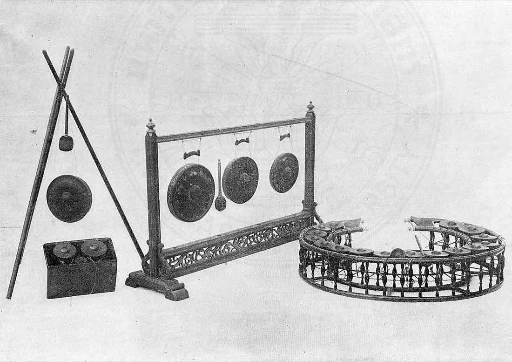

ตี · โมง · ทุ่ม
บอกเวลาแบบไทย
เมืองไทยใช้นาฬิกาสองแบบพร้อมกัน แบบ 24 ชั่วโมงบนกระดาษ กับแบบหกชั่วโมงที่พูดกัน ตั้งชื่อตามเสียงฆ้องตอนกลางวันและเสียงกลองตอนกลางคืน
Telling Time in Thai · กลางวันฆ้อง กลางคืนกลอง
nanobotco.github.io/thai-time
นาฬิกาหกชั่วโมง
นาฬิกาสองแบบ
เวลาที่เขียน ใช้แบบ 24 ชั่วโมง เช่น 14.30 น. อ่านว่า สิบสี่นาฬิกาสามสิบนาที แต่เวลาที่พูด คนส่วนใหญ่ใช้แบบเก่า คือ บ่ายสองโมงครึ่ง
แบบที่พูดแบ่งวันเป็นสี่ช่วง ช่วงละหกชั่วโมง แต่ละช่วงเริ่มนับหนึ่งใหม่ และมีคำของตัวเอง คำเหล่านี้มาจากเสียง โมง คือเสียงฆ้องที่ตีตอนกลางวัน ทุ่ม คือเสียงกลองที่ตีตอนค่ำ ตี ใช้กับช่วงหลังเที่ยงคืน
ตีสองคือ 02:00 แปดโมงคือ 08:00 บ่ายสองโมงคือ 14:00 สองทุ่มคือ 20:00 ถ้าจำช่วงผิด อาจไปถึงก่อนเวลาหกชั่วโมง หรือช้าไปสิบสองชั่วโมง
12.00 น. คือ เที่ยง และ 24.00 น. คือ เที่ยงคืน
ทุกชั่วโมง
| เวลา | พูดว่า | อ่านแบบอักษรโรมัน | แปลทีละคำ | พูดอีกแบบ |
|---|---|---|---|---|
| 01:00 | ตีหนึ่ง | ti nueng | strike 1 | |
| 02:00 | ตีสอง | ti song | strike 2 | |
| 03:00 | ตีสาม | ti sam | strike 3 | |
| 04:00 | ตีสี่ | ti si | strike 4 | |
| 05:00 | ตีห้า | ti ha | strike 5 | |
| 06:00 | หกโมงเช้า | hok mong chao | 6 gongs, morning | ย่ำรุ่ง |
| 07:00 | เจ็ดโมงเช้า | chet mong chao | 7 gongs, morning | โมงเช้า |
| 08:00 | แปดโมงเช้า | paet mong chao | 8 gongs, morning | สองโมงเช้า |
| 09:00 | เก้าโมงเช้า | kao mong chao | 9 gongs, morning | สามโมงเช้า |
| 10:00 | สิบโมงเช้า | sip mong chao | 10 gongs, morning | สี่โมงเช้า |
| 11:00 | สิบเอ็ดโมง | sip-et mong | 11 gongs | ห้าโมงเช้า |
| 12:00 | เที่ยง | thiang | noon | เที่ยงวัน |
| 13:00 | บ่ายโมง | bai mong | afternoon, 1 gong | |
| 14:00 | บ่ายสองโมง | bai song mong | afternoon, 2 gongs | |
| 15:00 | บ่ายสามโมง | bai sam mong | afternoon, 3 gongs | |
| 16:00 | สี่โมงเย็น | si mong yen | 4 gongs, evening | บ่ายสี่โมง |
| 17:00 | ห้าโมงเย็น | ha mong yen | 5 gongs, evening | บ่ายห้าโมง |
| 18:00 | หกโมงเย็น | hok mong yen | 6 gongs, evening | ย่ำค่ำ |
| 19:00 | หนึ่งทุ่ม | nueng thum | 1 drum | ทุ่มหนึ่ง |
| 20:00 | สองทุ่ม | song thum | 2 drums | |
| 21:00 | สามทุ่ม | sam thum | 3 drums | |
| 22:00 | สี่ทุ่ม | si thum | 4 drums | |
| 23:00 | ห้าทุ่ม | ha thum | 5 drums | |
| 00:00 | เที่ยงคืน | thiang khuen | noon of the night | หกทุ่ม · สองยาม |
หมุนหน้าปัด
พูดเวลาไหนก็ได้
ลากเข็มหรือเลื่อนแถบ หน้านี้จะเขียนเวลานั้นแบบที่คนพูด แบบที่ในวังกำหนดไว้เมื่อ พ.ศ. 2443 แบบที่วิทยุอ่าน และบอกว่าตรงกับยามไหนของล้านนา
- พูดอีกแบบ
- ประกาศ ร.ศ. 119
- วิทยุและหนังสือราชการ
- เขียน
- ยามล้านนา
ครึ่งชั่วโมงพูดว่า ครึ่ง นาทีอื่นพูดตัวเลขตามด้วย นาที ใกล้ครบชั่วโมงมักนับถอยหลัง เช่น อีกสิบนาทีสามทุ่ม ช่องประกาศ ร.ศ. 119 นับนาทีเป็นบาท บาทละหกนาที ตามหน่วยของกะลาลอย ปุ่มฟังเสียงตีฆ้องสำหรับโมง ตีกลองสำหรับทุ่ม เคาะกระดิ่งเล็กสำหรับตี และตีรัวสำหรับหกโมงเช้า เที่ยง และหกโมงเย็น
คำมาจากไหน
กลางวันฆ้อง กลางคืนกลอง
ก่อนจะมีนาฬิกา เวลามาจากหอ คนเฝ้าตีฆ้องตอนกลางวัน และตีกลองตอนกลางคืน ตีเท่าจำนวนชั่วโมงที่ผ่านไปในช่วงนั้น คนจึงเรียกชั่วโมงตามเสียงที่ได้ยิน โมงจากฆ้อง ทุ่มจากกลอง
ตอนหกโมงเช้า เที่ยง และหกโมงเย็น คนเฝ้าตีรัวยาว เรียกว่า ย่ำ จึงมีคำว่า ย่ำรุ่ง ย่ำเที่ยง ย่ำค่ำ ที่กรุงศรีอยุธยา กลองใบใหญ่ชั้นล่างของหอกลองตีตอนพระอาทิตย์ตก เป็นสัญญาณปิดประตูเมือง
เสียงเหล่านี้เบราว์เซอร์สร้างขึ้นจากคลื่นไม่กี่เส้นกับเสียงซ่า เป็นเสียงวาด ไม่ใช่เสียงอัด
ลองตอบ
ทายเวลา
แปดข้อ คำตอบผิดคือคำที่คนสับสนกันบ่อย ตัวเลขเดียวกันแต่อยู่คนละช่วง
· คะแนน 0
นาฬิกาน้ำ
กะลาที่จมทุกชั่วโมง
คำว่า นาฬิกา เดิมแปลว่ามะพร้าว สยามจับเวลาด้วย กะลาลอย คือกะลาครึ่งซีกเจาะรูเล็ก ๆ ที่ก้น ลอยไว้ในอ่างน้ำ น้ำซึมเข้า กะลาจมลงทีละนิด พอเต็มก็จม จมหนึ่งครั้งเท่ากับหนึ่งชั่วโมง
คนทำบากเส้นในกะลาเก้าเส้น แบ่งเป็นสิบส่วน ส่วนละหนึ่ง บาท เท่ากับหกนาที ที่โรงนาฬิกาในวัง ทุกครั้งที่กะลาจม คนเฝ้าตีฆ้องหนึ่งที และปักไม้คะแนนบนราวหนึ่งอัน ครบสิบสองอันคือหนึ่งกลางวันหรือหนึ่งกลางคืน ถอนออกตอนย่ำรุ่งและย่ำค่ำ
กะลาในภาพนี้เป็นครึ่งทรงกลมที่ลอยอยู่ ยิ่งน้ำเข้าก็ยิ่งจมลึก น้ำไหลเข้ารูเร็วเมื่อระดับน้ำข้างนอกสูงกว่าข้างในมาก (กฎของตอร์ริเชลลี ความเร็วโตตามรากที่สองของระยะนั้น) ระยะนี้แคบลงเมื่อกะลากว้างขึ้น กะลาจึงเต็มช้าลงตอนท้าย เส้นบากเก้าเส้นในภาพวางตามเวลาที่เท่ากันตามกฎนี้ กะลาจมเมื่อขอบลงถึงระดับน้ำ ก่อนน้ำจะเต็ม
รัชกาลที่ 4 ทรงบ่นว่าพนักงานกะบาทเอาเอง ไม่ว่าฤดูไหน “…คงให้ได้ว่าความแต่ว่าโมงละ ๑๐ บาทอยู่นั้นเอง…” และทรงเกรงว่าแขกเมืองที่พกนาฬิกาจะหัวเราะเยาะทุ่มโมงที่ตีสั้นบ้างยาวบ้าง
ราชกิจจานุเบกษา
ประกาศใช้ทุ่มโมงยาม ร.ศ. 119
วันที่ 23 กรกฎาคม ร.ศ. 119 (พ.ศ. 2443) รัชกาลที่ 5 โปรดให้ลงประกาศในราชกิจจานุเบกษา ว่าคนเรียกทุ่มโมงยามผิดเพี้ยนไป พูดว่า 6 โมงเช้า 6 โมงเย็น 3 ทุ่ม 6 ทุ่ม 9 ทุ่ม จึงให้เรียกให้ถูกตามรายการ
ในรายการนี้ กลองนับไปทั้งคืนจนถึงสิบเอ็ด ตีหนึ่งคือ เจ็ดทุ่ม และกลางคืนมีชื่อเฉพาะสามจุด ยามหนึ่ง คือ 21.00 น. สองยาม คือเที่ยงคืน สามยาม คือ 03.00 น. ยาม คือช่วงเฝ้ายาม ยามละสามชั่วโมง
ทุกวันนี้คนพูดทั้งห้าคำที่ประกาศว่าผิด และ ตี เข้ามาแทนกลองในช่วงหลังเที่ยงคืน
คำที่ประกาศว่าผิด 6 โมงเช้า6 โมงเย็น3 ทุ่ม6 ทุ่ม9 ทุ่ม
| เวลา | พูดวันนี้ | ประกาศ ร.ศ. 119 |
|---|---|---|
| 06:00 | หกโมงเช้า | ย่ำรุ่ง yam rung |
| 07:00 | เจ็ดโมงเช้า | โมงเช้า · เช้าโมงหนึ่ง mong chao · chao mong nueng |
| 08:00 | แปดโมงเช้า | สองโมงเช้า song mong chao |
| 09:00 | เก้าโมงเช้า | สามโมงเช้า sam mong chao |
| 10:00 | สิบโมงเช้า | สี่โมงเช้า si mong chao |
| 11:00 | สิบเอ็ดโมง | ห้าโมงเช้า ha mong chao |
| 12:00 | เที่ยง | เที่ยง · ย่ำเที่ยง thiang · yam thiang |
| 13:00 | บ่ายโมง | บ่ายโมง · บ่ายโมงหนึ่ง bai mong · bai mong nueng |
| 14:00 | บ่ายสองโมง | บ่ายสองโมง bai song mong |
| 15:00 | บ่ายสามโมง | บ่ายสามโมง bai sam mong |
| 16:00 | สี่โมงเย็น | บ่ายสี่โมง bai si mong |
| 17:00 | ห้าโมงเย็น | บ่ายห้าโมง bai ha mong |
| 18:00 | หกโมงเย็น | ย่ำค่ำ yam kham |
| 19:00 | หนึ่งทุ่ม | ทุ่มหนึ่ง thum nueng |
| 20:00 | สองทุ่ม | สองทุ่ม song thum |
| 21:00 | สามทุ่ม | ยามหนึ่ง yam nueng |
| 22:00 | สี่ทุ่ม | สี่ทุ่ม si thum |
| 23:00 | ห้าทุ่ม | ห้าทุ่ม ha thum |
| 00:00 | เที่ยงคืน | สองยาม song yam |
| 01:00 | ตีหนึ่ง | เจ็ดทุ่ม chet thum |
| 02:00 | ตีสอง | แปดทุ่ม paet thum |
| 03:00 | ตีสาม | สามยาม sam yam |
| 04:00 | ตีสี่ | สิบทุ่ม sip thum |
| 05:00 | ตีห้า | สิบเอ็ดทุ่ม · ตีสิบเอ็ด sip-et thum · ti sip-et |
ราชกิจจานุเบกษา เล่ม 17 หน้า 206 วันที่ 29 กรกฎาคม ร.ศ. 119 ตรงกับ ค.ศ. 1900 วิกิพีเดียภาษาอังกฤษเขียนว่า 1901
ล้านนา
เวลาล้านนา นับเป็นยาม ไม่ใช่ชั่วโมง
การนับแบบล้านนาเดิมไม่มีชั่วโมงละ 60 นาที จารึกล้านนาแบ่งวันเป็นสิบหกยาม ยามละชั่วโมงครึ่ง กลางวันแปด กลางคืนแปด เริ่มที่หกโมงเช้า ชื่อยามมาจากเครื่องที่ใช้ให้สัญญาณ ตามด้วยช่วงของวัน ตูด คือเป่าเขาควาย กลอง คือตีกลอง แตร คือเป่าแตร
ยามกลองงาย คือตีกลองบอกเวลาข้าวเช้า 07.30–09.00 น. ยามที่พบในจารึกล้านนามากที่สุดสี่ยาม อยู่ระหว่างรุ่งเช้าถึงบ่ายต้น ๆ ทั้งหมด คือ ยามตูดเช้า ยามกลองงาย ยามแตรใกล้เที่ยง และยามตูดซ้าย อาจารย์กรรณิการ์ วิมลเกษม ผู้รวบรวม เห็นว่าเป็นเพราะเป็นยามที่เหมาะกับพิธีมงคล
กลางวัน
- 06:00–07:30ยามตูดเช้าyam tut chao
- 07:30–09:00ยามกลองงายyam klong ngai
- 09:00–10:30ยามแตรใกล้เที่ยงyam trae klai thiang
- 10:30–12:00ยามเที่ยงyam thiang
- 12:00–13:30ยามตูดซ้ายyam tut sai
- 13:30–15:00ยามกลองค่ำyam klong kham
- 15:00–16:30ยามแตรใกล้ค่ำyam trae klai kham
- 16:30–18:00ยามค่ำ · พาดลั่นyam kham · phat lan
กลางคืน
- 18:00–19:30ยามตูดดึกyam tut duek
- 19:30–21:00ยามกลองดึกyam klong duek
- 21:00–22:30ยามแตรดึกyam trae duek
- 22:30–00:00ยามดึกyam duek
- 00:00–01:30ยามตูดรุ่งyam tut rung
- 01:30–03:00ยามกลองรุ่งyam klong rung
- 03:00–04:30ยามแตรใกล้รุ่งyam trae klai rung
- 04:30–06:00ยามรุ่งyam rung
ชื่อและเวลาจาก กรรณิการ์ วิมลเกษม วารสารดำรงวิชาการ พ.ศ. 2545 จารึกอีสานและลาวใช้ชื่อต่างไปบางชื่อ
ยังอยู่ในปฏิทิน
ปฏิทินล้านนายังบอกเวลาสำคัญเป็นยาม ปฏิทินล้านนา 2565 ที่ ศักดิ์นรินทร์ ชาวงิ้ว จัดทำ เผยแพร่โดยมหาวิทยาลัยเทคโนโลยีราชมงคลล้านนา บอกว่าสังขานต์ล่องตกในยามแตรสู่เที่ยง เวลา 9 นาฬิกา 52 นาที 12 วินาที วันที่ 14 เมษายน และศักราชขึ้นในยามกลองแลง เวลา 13 นาฬิกา 49 นาที 48 วินาที วันที่ 16 เมษายน เวลาทั้งสองอยู่ในช่วงยามตามตารางข้างบน แลง คือคำเมืองของช่วงบ่ายแก่ถึงเย็น
ห้าร้อยปีก่อนหน้านั้น จารึกวัดดอยคำ ลำพูน พ.ศ. 2045 บอกเวลาของดวงชาตาว่า ยามแตรจักใกล้เที่ยง
หกสิบชื่อวัน
ล้านนายังตั้งชื่อวันจากรอบหกสิบ เรียกว่า วันไท ชื่อหน้าสิบชื่อกับชื่อหลังสิบสองชื่อหมุนไปพร้อมกันวันละหนึ่งก้าว เหมือนเฟืองสองตัว กาบยี ดับเหม้า รวายสี เมืองใส้ … ครบหกสิบวันเฟืองจึงกลับมาตรงกัน
เฟืองทั้งสองหมุนพร้อมกัน และ 10 กับ 12 เป็นเลขคู่ทั้งคู่ ชื่อหน้าแต่ละชื่อจึงพบชื่อหลังได้แค่ครึ่งเดียว จาก 120 คู่ที่เป็นไปได้ เกิดจริง 60 คู่ ปีก็หมุนด้วยเฟืองคู่เดียวกัน จุลศักราช 1388 ที่ขึ้นเมื่อเมษายน 2569 คือ ปีรวายสะง้า ปีม้า
ปี จ.ศ. –
นับจากปฏิทินล้านนา 2565 ซึ่ง 1 มกราคม 2565 คือวันกาบยี และ 14, 15, 16 เมษายน คือ เมืองเร้า เปิกเส็ด กัดใค้ หน้านี้นับตามวันที่ตามปฏิทินสากล จุลศักราชขึ้นปีใหม่กลางเดือนเมษายน
เดือนเร็วกว่าสองเดือน
ล้านนานับเดือนทางจันทรคติเร็วกว่าภาคกลางสองเดือน ยี่เป็ง คือเพ็ญเดือนยี่ของทางเหนือ ตรงกับเพ็ญเดือนสิบสองของภาคกลาง ส่วนเมืองไทลื้อและไทขืน เช่น แม่สาย เชียงของ เชียงคำ และน่านตอนบน นับเดือนโหรา เร็วกว่าภาคกลางหนึ่งเดือน และช้ากว่าเดือนปากเล้มของล้านนาหนึ่งเดือน
เวลาตามดวงอาทิตย์
เที่ยงตามแดด
นาฬิกาไทยตั้งตามเส้นลองจิจูด 105 องศาตะวันออก ซึ่งผ่านจังหวัดอุบลราชธานี ก่อนวันที่ 1 เมษายน 2463 สยามใช้เวลาตามดวงอาทิตย์ของกรุงเทพฯ เร็วกว่ากรีนิช 6 ชั่วโมง 42 นาที 4 วินาที คืนนั้นนาฬิกาเดินหน้าไป 17 นาที 56 วินาที
เชียงใหม่อยู่ทางตะวันตกของเส้นนี้หกองศา ดวงอาทิตย์ที่เชียงใหม่จึงขึ้นสูงสุดหลังเที่ยงตามนาฬิการาว 24 นาที บวกลบตามฤดู ลองเลือกเมือง
คนในป่าทางเหนือดูเวลาด้วยมือ เหยียดแขนออกไป กางนิ้วเป็นคืบ วัดจากขอบฟ้าขึ้นไปหาดวงอาทิตย์ สูงหนึ่งคืบคือหนึ่งโมง หกคืบคือเที่ยง
คำนวณดวงอาทิตย์ด้วยสูตรของ NOAA เวลาขึ้นและตกนับที่ขอบบนของดวงอาทิตย์ และเผื่อการหักเหของแสงในอากาศ
หนึ่งวัน
วันหนึ่งตามนาฬิกา
- 04:00ตีสี่วัดหลายแห่งตื่น พระทำวัตรเช้า
- 06:00หกโมงเช้าพระออกบิณฑบาตตอนฟ้าสาง
- 08:00แปดโมงเช้าวิทยุ โทรทัศน์ และเสียงตามสายเปิดเพลงชาติ ชักธงขึ้น คนหยุดยืนตรงที่เดิม
- 11:00สิบเอ็ดโมงเพล พระฉันมื้อสุดท้ายของวัน ให้เสร็จก่อนเที่ยง
- 12:00เที่ยงคนทั่วไปกินข้าวเที่ยง
- —บ่ายควายคำบอกเวลาตามแดดแบบเก่า บ่ายควาย และ ควายเข้าคอก หมายถึงช่วงบ่ายแก่ถึงเย็น
- 18:00หกโมงเย็นเพลงชาติอีกครั้ง ชักธงลง
- 00:00เที่ยงคืนในประกาศ ร.ศ. 119 เรียกว่า สองยาม คือจบยามที่สอง
ภาพเก่า



.jpg){kind=link}
ประวัติ
จากหอกลองถึงวิทยุ
- อยุธยาหอกลองสูงสิบวา สี่ชั้น มีกลองสามใบ ใบล่าง “ย่ำพระสุรศรี” ตีตอนพระอาทิตย์ตกให้ปิดประตูเมือง ใบกลาง “อัคคีพินาศ” ตีเมื่อไฟไหม้ ใบบน “พิฆาตไพรินทร์” ตีเมื่อข้าศึกมาประชิด
- รัชกาลที่ 1การพิสูจน์ด้วยการดำน้ำใช้กะลาจมเป็นเครื่องจับเวลา ทรงสงสัยว่าถ้ากะลาจมก่อนทั้งสองฝ่ายผุดขึ้นจะตัดสินอย่างไร จึงให้ตีฆ้องเป็นสัญญาณแทน
- รัชกาลที่ 2นาฬิกาเล็ก ๆ มาเป็นเครื่องบรรณาการจากโปรตุเกส คนสยามยังไม่ใส่เสื้อ จึงห่อไว้ในพกผ้านุ่ง เป็นที่มาของคำว่า นาฬิกาพก
- รัชกาลที่ 4ตั้งกรมนาฬิกาในวัง เทียบนาฬิกาลูกตุ้มกับนาฬิกาแดดตอนเที่ยง และออกประกาศเรื่องทุ่มโมงในราชกิจจานุเบกษา
- 2432ใช้ปฏิทินสุริยคติเป็นปฏิทินราชการ ขึ้นปีใหม่วันที่ 1 เมษายน
- 2443รัชกาลที่ 5 ออกประกาศใช้ทุ่มโมงยาม กำหนดชื่อชั่วโมง และบอกคำที่ใช้ผิดห้าคำ
- ยิงปืนเที่ยงทหารเรือยิงปืนตอนเที่ยงให้คนตั้งนาฬิกา ต่อมาโรงไฟฟ้าใช้การกะพริบไฟตอนสองทุ่มแทน
- 2463วันที่ 1 เมษายน สยามเปลี่ยนจากเวลาตามดวงอาทิตย์ของกรุงเทพฯ มาใช้เส้น 105 องศาตะวันออก UTC+7
- วันนี้กรมอุทกศาสตร์ กองทัพเรือ รักษาเวลามาตรฐานของประเทศไทย วิทยุและโทรทัศน์ประกาศเวลาตอน 08.00 น. และ 18.00 น. พร้อมเพลงชาติ
คำศัพท์
การตี ใช้กับชั่วโมงตีหนึ่งถึงตีห้า
เสียงฆ้อง ใช้กับชั่วโมงกลางวัน
เสียงกลอง ใช้กับชั่วโมงหนึ่งทุ่มถึงห้าทุ่ม
ตีรัวยาว ตอนย่ำรุ่ง ย่ำเที่ยง ย่ำค่ำ
ช่วงเฝ้ายาม ภาคกลางยามละสามชั่วโมงตอนกลางคืน ล้านนายามละชั่วโมงครึ่ง
เที่ยงวัน ส่วนเที่ยงคืนคือ 24.00 น.
ช่วงของวัน
ช่วงของกลางคืน
ครึ่งชั่วโมง
เครื่องบอกเวลา และหน่วยชั่วโมงแบบ 24 ชั่วโมง เดิมคือกะลาลอย
ตัวย่อของนาฬิกา เช่น 14.30 น.
หน่วยของเวลา
หกนาที หนึ่งในสิบของชั่วโมงบนกะลา
ระยะจากปลายนิ้วโป้งถึงปลายนิ้วก้อยเมื่อกางมือ
เวลาฉันอาหารของพระก่อนเที่ยง
แหล่งข้อมูล
ชื่อชั่วโมงจากราชกิจจานุเบกษา ร.ศ. 119 และวิกิพีเดียภาษาไทยและอังกฤษ ยามล้านนาจาก กรรณิการ์ วิมลเกษม กะลาลอย หอกลอง และปืนเที่ยงจาก พิศาลศรี กระต่ายทอง ในศิลปวัฒนธรรม
- Royal Gazette vol. 17, p. 206, 29 July R.S. 119 (1900): ประกาศใช้ทุ่มโมงยาม
- Kannika Wimonkasem, ศักราช ศก ปี วัน เดือน ฤกษ์ และยามในจารึกล้านนา, Damrong Journal 1(1), 2002
- Phisansri Kratai-thong, หอสูงกับการบอกเวลา, Silpa Wattanatham, October 2015 (online excerpt)
- Silpa Wattanatham, คำเรียกเวลา โมง-ทุ่ม มาจากไหน ใครกำหนด?
- Saknarin Chaongio, ปฏิทินล้านนา 2565 (Lanna calendar 2022), Rajamangala University of Technology Lanna
- Wikipedia: Thai six-hour clock
- วิกิพีเดีย: นาฬิกาหกชั่วโมง
- Wikipedia: Time in Thailand
- Hydrographic Department, Royal Thai Navy (standard time)
- NOAA solar calculation details